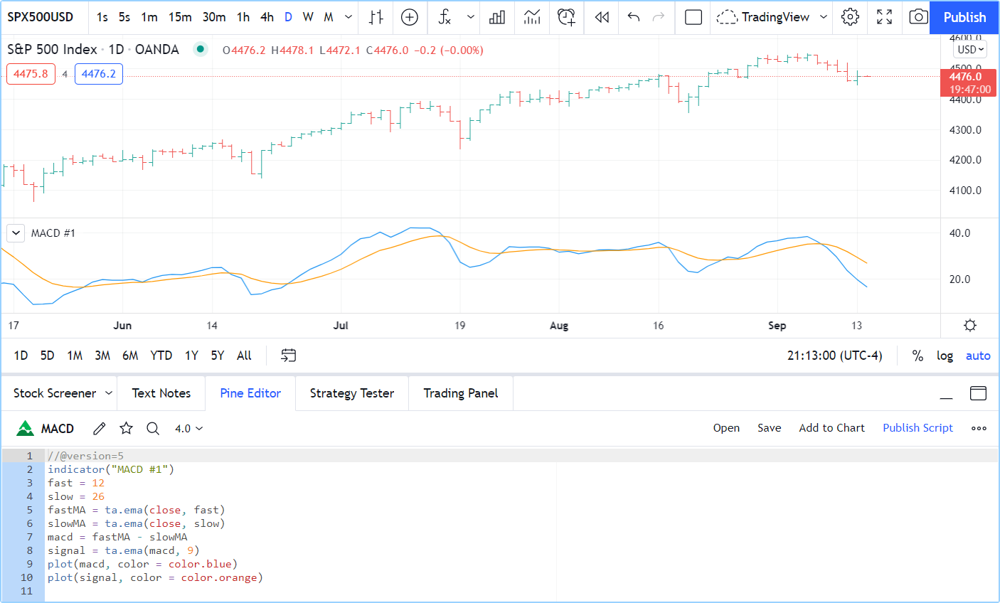
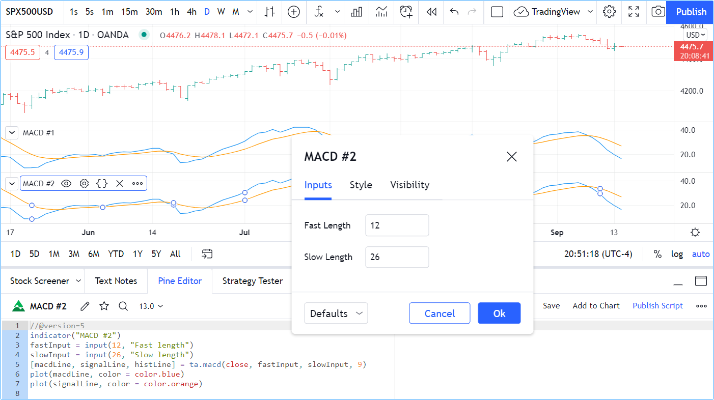

First indicator¶
The Pine Script® Editor¶
The Pine Script® Editor is where you will be working on your scripts. While you can use any text editor you want to write your Pine scripts, using our Editor has many advantages:
- It highlights your code following Pine Script® syntax.
- It pops up syntax reminders for built-in and library functions when you hover over them.
- It provides quick access to the Pine Script® v5 Reference Manual popup when you ctrl + click / cmd + click on Pine Script® keywords.
- It provides an auto-complete feature that you can activate with ctrl + space / cmd + space.
- It makes the write/compile/run cycle fast because saving a new version of a script loaded on the chart also executes it immediately.
- While not as feature-rich as the top editors out there, it provides key functionality such as search and replace, multi-cursor and versioning.
To open the Editor, click on the “Pine Script® Editor” tab at the bottom of your TradingView chart. This will open up the Editor’s pane.
First version¶
We will now create our first working Pine script, an implementation of the MACD indicator in Pine Script®:
1 2 3 4 5 6 7 8 9 10 | //@version=5
indicator("MACD #1")
fast = 12
slow = 26
fastMA = ta.ema(close, fast)
slowMA = ta.ema(close, slow)
macd = fastMA - slowMA
signal = ta.ema(macd, 9)
plot(macd, color = color.blue)
plot(signal, color = color.orange)
|
- Start by bringing up the “Open” dropdown menu at the top right of the Editor and choose “New blank indicator”.
- Then copy the example script above, taking care not to include the line numbers in your selection.
- Select all the code already in the editor and replace it with the example script.
- Click “Save” and choose a name for your script. Your script is now saved in TradingView’s cloud, but under your account’s name. Nobody but you can use it.
- Click “Add to Chart” in the Editor’s menu bar. The MACD indicator appears in a separate Pane under your chart.
Your first Pine script is running on your chart, which should look like this:
Let’s look at our script’s code, line by line:
- Line 1:
//@version=5 - This is a compiler annotation telling the compiler the script will use version 5 of Pine Script®.
- Line 2:
indicator("MACD #1") - Defines the name of the script that will appear on the chart as “MACD”.
- Line 3:
fast = 12 - Defines a
fastinteger variable which will be the length of the fast EMA. - Line 4:
slow = 26 - Defines a
slowinteger variable which will be the length of the slow EMA. - Line 5:
fastMA = ta.ema(close, fast) - Defines the variable
fastMA, containing the result of the EMA calculation (Exponential Moving Average) with a length equal tofast(12), on thecloseseries, i.e., the closing price of bars. - Line 6:
slowMA = ta.ema(close, slow) - Defines the variable
slowMA, containing the result of the EMA calculation with a length equal toslow(26), fromclose. - Line 7:
macd = fastMA - slowMA - Defines the variable
macdas the difference between the two EMAs. - Line 8:
signal = ta.ema(macd, 9) - Defines the variable
signalas a smoothed value ofmacdusing the EMA algorithm (Exponential Moving Average) with a length of 9. - Line 9:
plot(macd, color = color.blue) - Calls the
plotfunction to output the variablemacdusing a blue line. - Line 10:
plot(signal, color = color.orange) - Calls the
plotfunction to output the variablesignalusing an orange line.
Second version¶
The first version of our script calculated MACD “manually”, but because Pine Script® is designed to write indicators and strategies, built-in Pine Script® functions exist for many common indicators, including one for… MACD: ta.macd().
This is the second version of our script:
1 2 3 4 5 6 7 | //@version=5
indicator("MACD #2")
fastInput = input(12, "Fast length")
slowInput = input(26, "Slow length")
[macdLine, signalLine, histLine] = ta.macd(close, fastInput, slowInput, 9)
plot(macdLine, color = color.blue)
plot(signalLine, color = color.orange)
|
Note that we have:
- Added inputs so we can change the lengths for the MAs
- We now use the ta.macd() built-in to calculate our MACD, which saves us three line and makes our code easier to read.
Let’s repeat the same process as before to copy that code in a new indicator:
- Start by bringing up the “Open” dropdown menu at the top right of the Editor and choose “New blank indicator”.
- Then copy the example script above, again taking care not to include the line numbers in your selection.
- Select all the code already in the editor and replace it with the second version of our script.
- Click “Save” and choose a name for your script different than the previous one.
- Click “Add to Chart” in the Editor’s menu bar. The “MACD #2” indicator appears in a separate Pane under the “MACD #1” indicator.
Your second Pine script is running on your chart. If you double-click on the indicator’s name on your chart, you will bring up the script’s “Settings/Inputs” tab, where you can now change the slow and fast lengths:
Let’s look at the lines that have changed in the second version of our script:
- Line 2:
indicator("MACD #2") - We have changed
#1to#2so the second version of our indicator displays a different name on the chart. - Line 3:
fastInput = input(12, "Fast length") - Instead of assigning a constant value to a variable, we have used the input()
function so we can change the value in our script’s “Settings/Inputs” tab.
12will be the default value and the field’s label will be"Fast length". If the value is changed in the “Inputs” tab, thefastInputvariable’s content will contain the new value and the script will re-execute on the chart with that new value. Note that, as our Pine Script® Style Guide recommends, we addInputto the end of the variable’s name to remind us, later in the script, that its value comes from a user input. - Line 4:
slowInput = input(26, "Slow length") - We do the same for the slow length, taking care to use a different variable name, default value and text string for the field’s label.
- Line 5:
[macdLine, signalLine, histLine] = ta.macd(close, fastInput, slowInput, 9) - This is where we call the ta.macd() built-in to
perform all the first version’s calculations in one line only. The function requires four parameters (the values after the function name, enclosed in parentheses).
It returns three values into the three variables instead of only one, like the functions we used until now, which is why we need to enclose the list of three
variables receiving the function’s result in square brackets, to the left of the
=sign. Note that two of the values we pass to the function are the “input” variables containing the fast and slow lengths:fastInputandslowInput. - Line 6 and 7:
- The variable names we are plotting there have changed, but the lines are doing the same thing as in our first version.
Our second version performs the same calculations as our first, but we can change the two lengths used to calculate it. Our code is also simpler and shorter by three lines. We have improved our script.